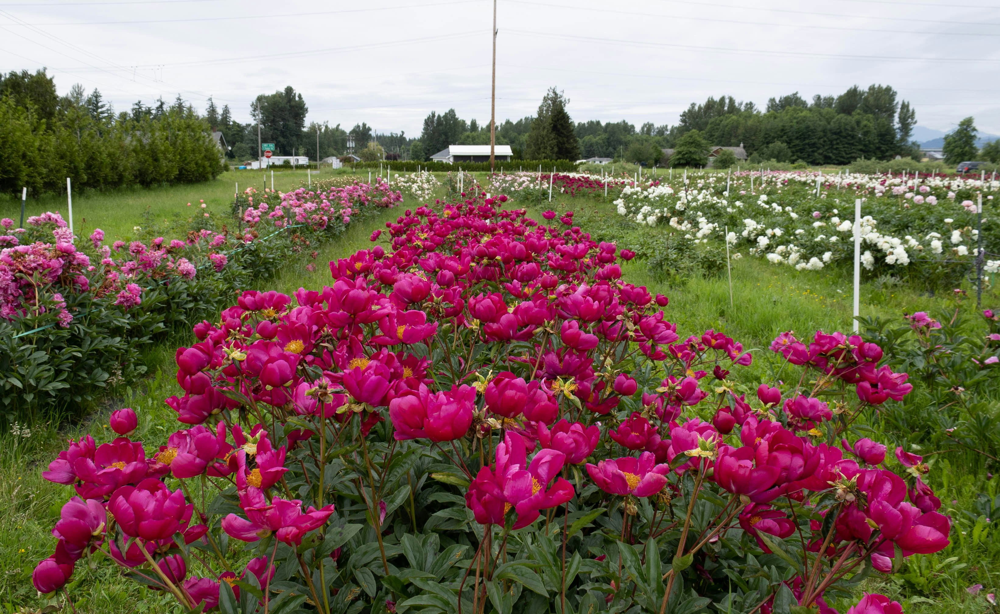

Our Story
Elegant Blooms was born from a simple idea: every flower tells a story. What started as a tiny stall with hand-tied roses has blossomed into a premium floral boutique — dedicated to beauty, detail, and unforgettable moments.
Our team of passionate floral artists believes that flowers are more than gifts — they’re messages of love, hope, and joy. Each bouquet is crafted with care, using only the freshest blooms sourced from trusted growers.
Whether it’s a quiet *I love you*, a grand *Congratulations!*, or a comforting *I’m here for you* — Elegant Blooms is here to help you say it beautifully.
From our hearts to yours,
thank you for letting us bloom with you.
Our Journey
Started as a small flower cart in town, crafting simple hand-tied bouquets with love and hope.

Opened our first floral studio — even during tough times, we bloomed with resilience and care.

Launched Elegant Blooms online and began delivering joy one bouquet at a time across the city.
Introduced our signature collection: curated blooms for weddings, anniversaries, and life’s little moments.

Partnered with local farms to ensure every flower is fresh, sustainable, and full of meaning.
